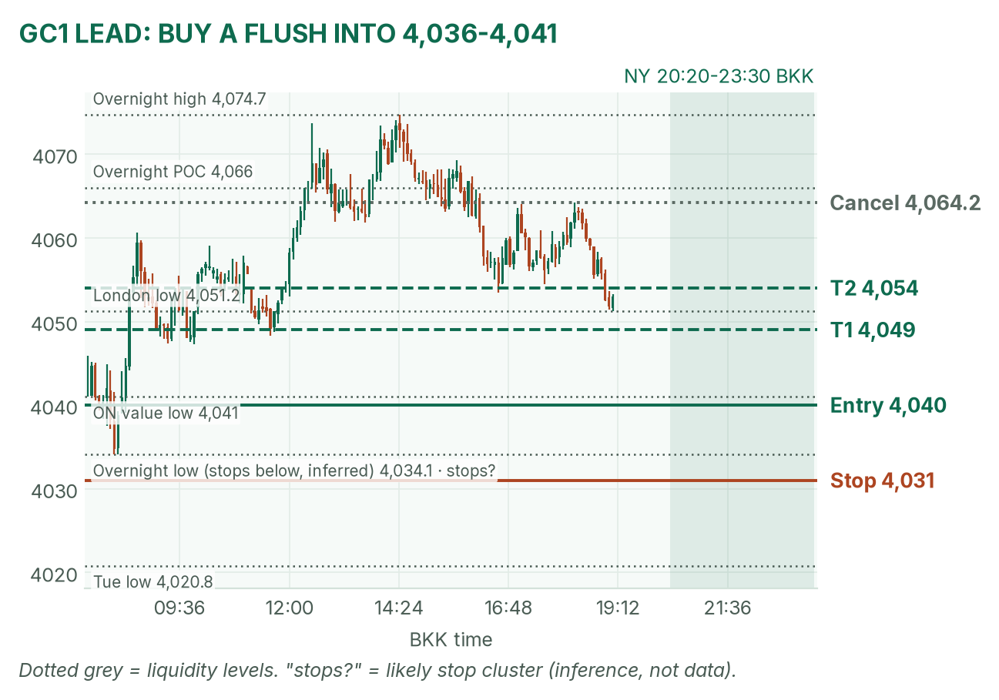
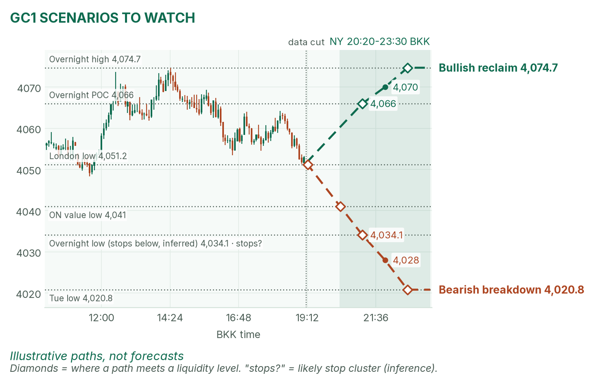
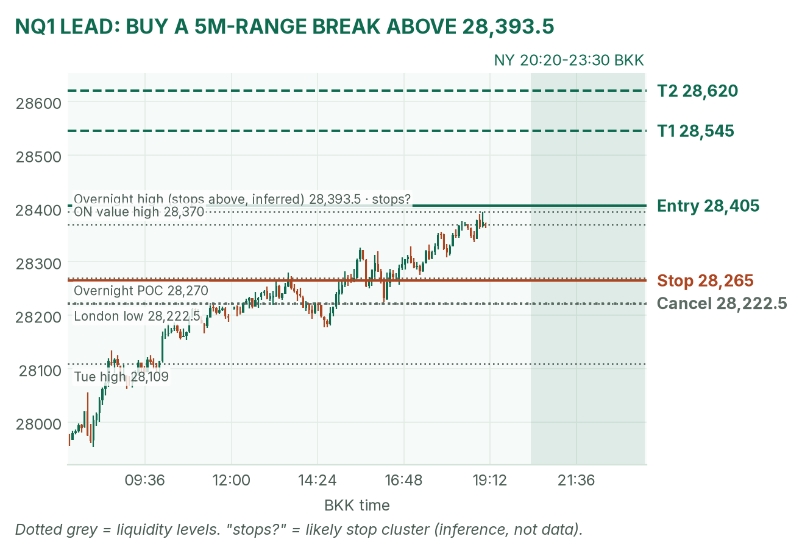
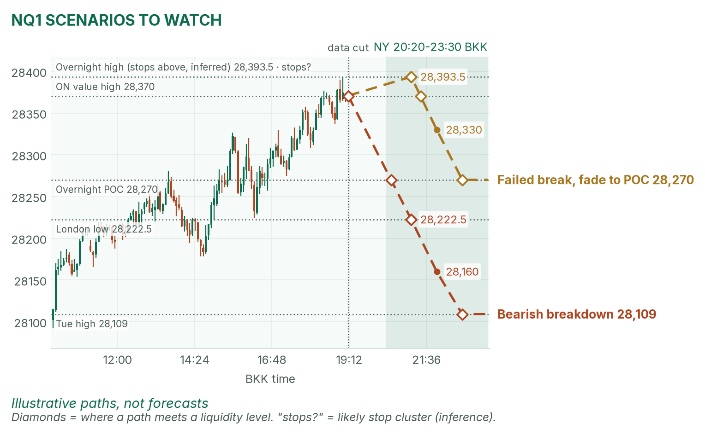

No data, bonds shut. The 21:30 open is the only event.
Window 20:20–23:30 BKK (US winter time). Data cut 19:10 BKK: GC 4,051.6, NQ 28,370.75 (completed 5-minute bars). Backup data today: TopstepX login failed, so levels come from Yahoo Finance Dec futures bars. Levels only, flat by 23:30. Ideas, not advice. April's pre-NY brief (~19:00 BKK) was read.
Summary
GC: buy a flush into 4,036–4,041, stop 4,031, targets 4,049 and 4,054. About 40% once filled.
NQ: buy a break above 28,393.5, entry 28,405, stop 28,265, targets 28,545 and 28,620. About 35%.
No US data today and the bond market is closed for Veterans Day. Only no-trade zone: 21:25–21:32 around the stock open.
The market story
Tuesday's hot core CPI (0.3% against 0.2% forecast) pushed the 10-year yield to 5.000%, and a December hike is about 88% priced, per April. Today bonds can't trade, so that pressure is frozen until Thursday. The AI trade is back: CoreWeave beat, Nvidia is up about 4.7% premarket, and NQ is pressing its overnight high. The dollar is firmer, which leans on gold and the euro.
Recall the lesson on priced-in news: a hike everyone expects doesn't move price; only surprises do, and today there are none scheduled. That means price action at levels drives the day. My bias: bullish Nasdaq, neutral-to-soft gold inside its overnight range.
News (BKK)
Time
Event
Forecast
Prior
Read
21:30
US cash stock open (bonds shut, Veterans Day)
–
–
NQ's 5-minute range forms.
Thu 20:30
Jobless claims, bonds reopen
–
–
Outside the window. Tomorrow's real test.
No US releases, Fed speakers or auctions inside the window. No-trade zone: 21:25–21:32. Source: April's brief (Kiplinger, SIFMA, Wrightson).
Levels to watch
Level
GC
NQ
Overnight high (since 06:00)
4,074.7
28,393.50
Overnight value high
4,071
28,370
Overnight POC
4,066
28,270
London low
4,051.2
28,222.50
Overnight value low
4,041
27,960
Overnight low
4,034.1
27,856.00
Tuesday high / low
4,156.2 / 4,020.8
28,109.00 / 27,516.00
Expected NY range (3-session median)
about 60 points
about 500 points
Gold (GC1)
Bias: neutral to soft. Gold slid from 4,074.7 to 4,051 as the dollar firmed, but it's still inside its overnight value area (the price zone holding 70% of the volume). The NY rule fades the COMEX range back toward the POC (the price with the most volume).
The trade: buy the flush
Entry
4,036–4,041 (plan 4,040), after 20:20, on a dip into the 4,041 value low that holds above the 4,034.1 overnight low
Stop
4,031, under the overnight low, where sellers' stops likely cluster (inference)
Targets
1R partial 4,049 · T2 4,054 (1.56R), just above the 4,051.2 London low
Cancel
Trades above 4,064.2 before the fill, a 5m close below 4,034, or no fill by 22:30
Probability
~40%, an estimate. Basis: GC NY opening ranges mostly failed and reverted in my 42-session study (not statistically significant); the 14-point target is under a quarter of the typical range.
A 5m close below 4,034.1 means sellers won: no trade, and the bearish scenario takes over. April is neutral, calling gold "inside 4,034.1 to 4,074.7", so partial agreement.

GC 5-minute bars into 19:10. Entry sits at the value low, just above the overnight low.

Illustrative paths, not forecasts.
Scenarios to watch
Bullish reclaim: a 15m close back above the 4,066 POC. Aims for 4,074.7, the overnight high.
Bearish breakdown: a 5m close below 4,034.1. Aims for 4,020.8, Tuesday's low.
Nasdaq (NQ1)
Bias: bullish. NQ is up about 1.9% and sits at its overnight high, above Tuesday's 28,109 high. The NY rule: trade breakouts of the 21:30–21:35 range. Use VWAP (the volume-weighted average price) as a filter only after about 22:00: stay long only above it.
The trade: bullish range breakout
Entry
Buy stop 28,405, above the 28,393.5 overnight high, after 21:32. Only if the 21:30–21:35 range high sits below 28,405, so the break clears both.
Stop
28,265, under the 28,270 POC and the 28,275 low of the last two hours
Targets
1R partial 28,545 · T2 28,620 (1.54R)
Cancel
5m close below 28,222.5 before entry, or no break by 22:30
Probability
~35%, an estimate. Basis: NQ 5-minute breakouts averaged +0.37R over 31 sessions (not significant); the 215-point target is under half the typical 500-point range.
Why: sellers' stops likely sit above 28,393.5 (my inference). If the open fades and NQ closes a 5m bar below 28,270, there's no trade on the long side. April agrees on direction: "AI buyers are back", with 28,376.75 as the high to beat.

NQ 5-minute bars into 19:10. A steady climb into the overnight high.

Illustrative paths, not forecasts.
Scenarios to watch
Bearish breakdown: a 5m close below 28,222.5, the London low. Aims for 28,109, Tuesday's high.
Mean reversion: a pop above 28,393.5 that closes back under it. Aims for the 28,270 POC.
6E (not traded): 1.1150, at its 1.1145 overnight low as the dollar firms.
Before you click
ORB bases. GC NY: 20:20 COMEX open until a 2-minute candle's volume drops below half the first two's average, fade to POC. NQ NY: 21:30–21:35 range, trade breakouts. GC and 6E London: 15:00–15:30 range (fade gold, break the euro).
Checklist. 1) Room to today's max loss? 2) Within daily rules? 3) No release within 30 minutes? 4) Agrees with the bias? 5) At a marked level? 6) Setup tagged? 7) Entry, stop, 1R partial, target set? 8) Calm, not chasing?
Reset (60 seconds). Hands off the mouse. Breathe in 4, hold 4, out 6, five times. Name the feeling in one word. Say the plan aloud. "Eager" or "frustrated"? Wait 5 minutes.